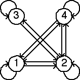

Second Homework Set Answers
2(d)

Note the empty length 2 addresses are 13, 31, 34, and 43. Consequently, the forbidden transitions are
3 → 1,
1 → 3,
4 → 3,
and
3 → 4.
These are the missing arrows in the graph on the right.
Return to
Homework 2 Practice
.